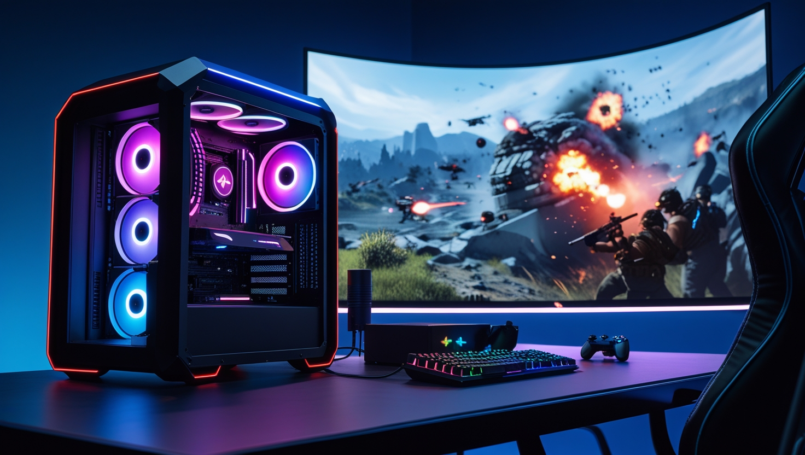

.
.
.
Gaming Tips and Insights
Gaming is more than just entertainment—it's a passion and a thriving industry. Whether you're a casual player or a competitive gamer, these tips will enhance your experience.
1. Building the Perfect Gaming Setup
Ensure you have a powerful gaming rig with a high-refresh-rate monitor, a comfortable chair, and peripherals like mechanical keyboards and precision gaming mice. Tools like PCPartPicker can help you build your dream PC.
2. Enhancing In-Game Performance
Adjust game settings for optimal performance. Lowering shadows, disabling motion blur, and fine-tuning resolution can improve FPS without sacrificing too much visual quality. Tools like NVIDIA GeForce Experience can auto-optimize settings for supported games.
3. Staying Competitive
Practice makes perfect. Invest time in learning maps, mastering mechanics, and understanding strategies. Watching pro gameplay on platforms like Twitch can provide valuable insights.
4. Gaming Health Tips
Stay healthy during long gaming sessions by taking breaks, maintaining good posture, and using blue light filters. Tools like f.lux can reduce eye strain.
5. Exploring Multiplayer Opportunities
Engage with friends or communities by exploring co-op and multiplayer games. Platforms like Discord are great for connecting with fellow gamers.
6. Choosing the Right Accessories
Accessories like headsets with surround sound, ergonomic controllers, and VR equipment can elevate your gaming experience. Always read reviews before making a purchase.
7. Exploring Indie Games
Don't overlook indie games! They often bring fresh ideas and unique gameplay. Check out platforms like Itch.io and Steam for hidden gems.